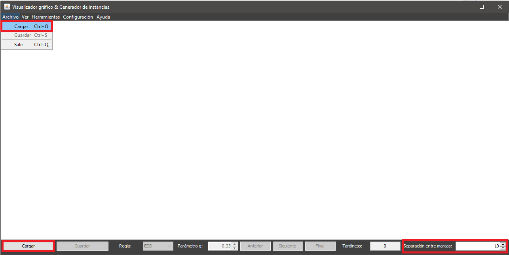
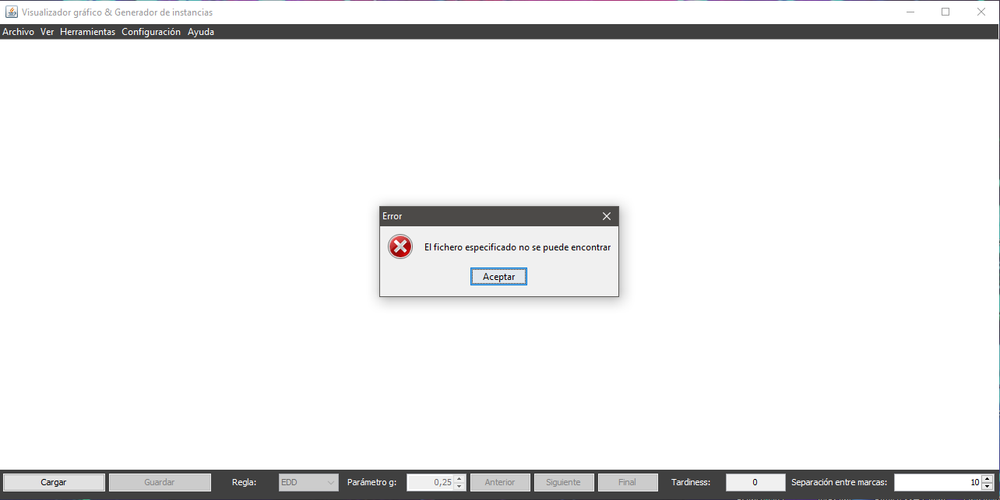
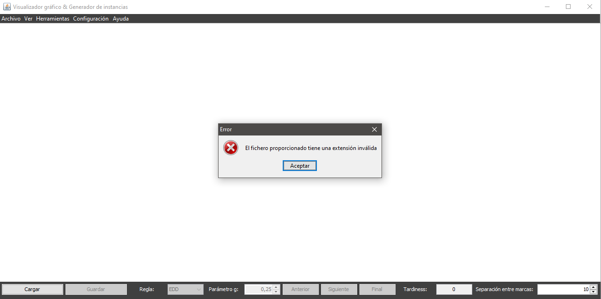
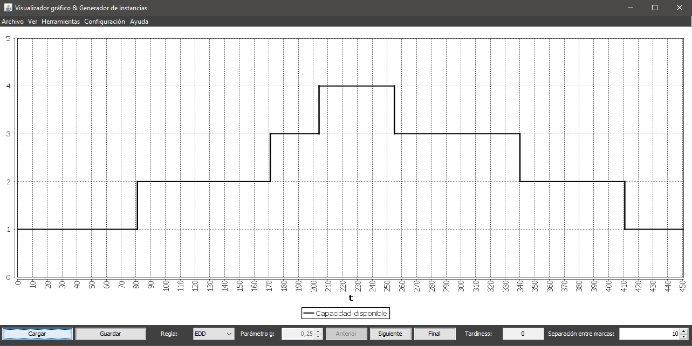

Para cargar una instancia es necesario disponer de un fichero con el siguiente formato
NOP: número de tareas
NINT :número de intervalos de capacidad
NINT líneas, cada una con tres enteros: [ComienzoIntervalo FinIntervalo CapacidadIntervalo] (300000 en FinIntervalo indica infinito)
NOP líneas, cada una con tres enteros: [ÍndiceTarea DuraciónTarea DueDateTarea]
Una vez se posee un fichero correcto puede accederse a la carga de instancias de varias formas:
Además, se puede modificar el valor numérico especificado junto a la etiqueta Separación entre marcas para escoger con que separación inicial entre marcas de graduación se desea visualizar la instancia al cargarla.
Una vez accedida a la opción se desplegará un diálogo donde el usuario podrá navegar por sus directorios y escoger el fichero a cargar. Para ello podrá:

En caso de que el fichero seleccionado no exista o tenga una extensión inválida (distinta a txt) se informará al usuario del error:
 En caso de que el fichero seleccionado exista y tenga extensión correcta, pero estó mal formado (no cumple el formato), no se informará del error al usuario, pero no se cargará la instancia.
Si la instancia se carga correctamente, se visualizará en pantalla:
